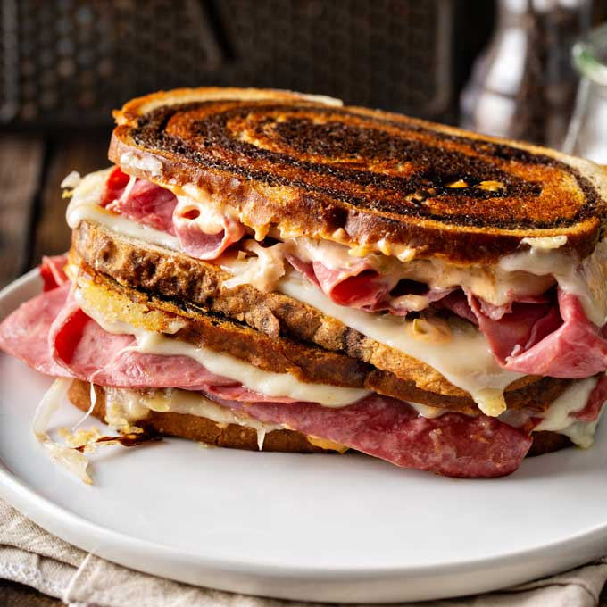

Reuben Sandwich

Description
The Reuben sandwich is a North American grilled sandwich composed of corned beef, Swiss cheese, sauerkraut, and Thousand Island dressing or Russian dressing,
grilled between slices of rye bread.
Ingredients
- 2 tablespoons butter
- 8 slices rye bread
- 8 slices deli sliced corned beef
- 8 slices Swiss cheese
- 1 cup sauerkraut, drained
- ½ cup Thousand Island dressing
Steps
- Preheat a large skillet or griddle on medium heat.
- Lightly butter one side of bread slices. Spread non-buttered sides with Thousand Island dressing.
On 4 bread slices, layer 1 slice Swiss cheese, 2 slices corned beef, 1/4 cup sauerkraut and second slice of Swiss cheese.
Top with remaining bread slices, buttered sides out.
- Grill sandwiches until both sides are golden brown, about 5 minutes per side. Serve hot.